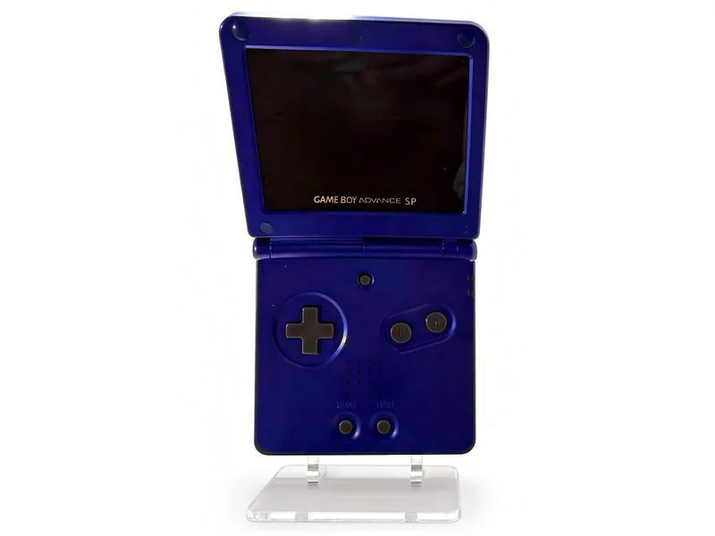

Game Boy Advance SP — Cobalt
The 2003 clamshell Game Boy Advance in cobalt blue, with its front-lit screen swapped for an IPS panel.
Nintendo folded the Game Boy Advance in half in 2003: a clamshell that protects its own screen, a built-in rechargeable battery, and, for the first time on a Game Boy, a light for the screen. Cobalt was one of the launch colors.
That light was a front light. It shone across the screen from the edge, and the picture looked washed out next to anything backlit.
This one has an IPS panel in its place, installed by iFixRetro: a backlit screen with real contrast and wide viewing angles, inside the original cobalt shell.
What changed, and what didn’t
- Stock screen
- Front-lit reflective LCD
- Screen now
- IPS, backlit
- Installed by
- iFixRetro
- Shell
- Original cobalt
- Power
- Built-in rechargeable battery
- Plays
- Game Boy, Game Boy Color and Game Boy Advance cartridges
Work log
What has been done to it.
- IPS screen installed — By iFixRetro, in the original shell.
- Family
- Game Boy Advance — 32-bit handheld, 2001
- Revision
- SP — the 2003 clamshell
- Status
- On the shelf — With the rest of the handhelds.
Handhelds don’t run through the RGB chain, so this one isn’t in the console mod table. The rest of the handhelds are on the consoles page.